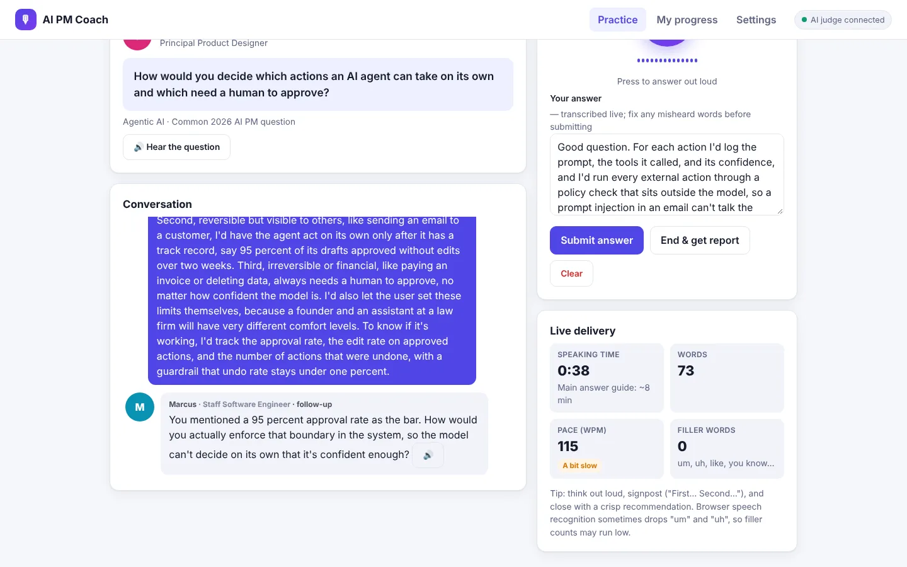
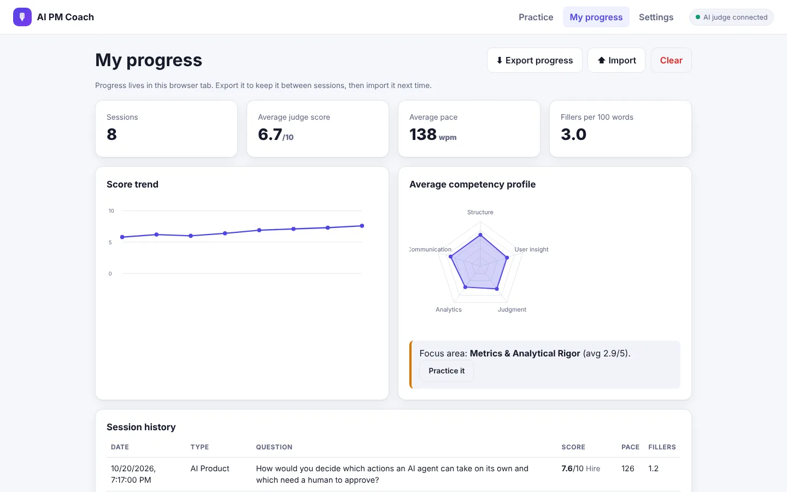
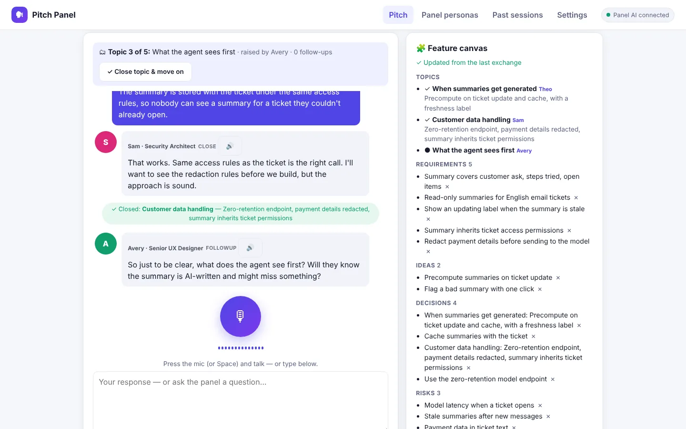
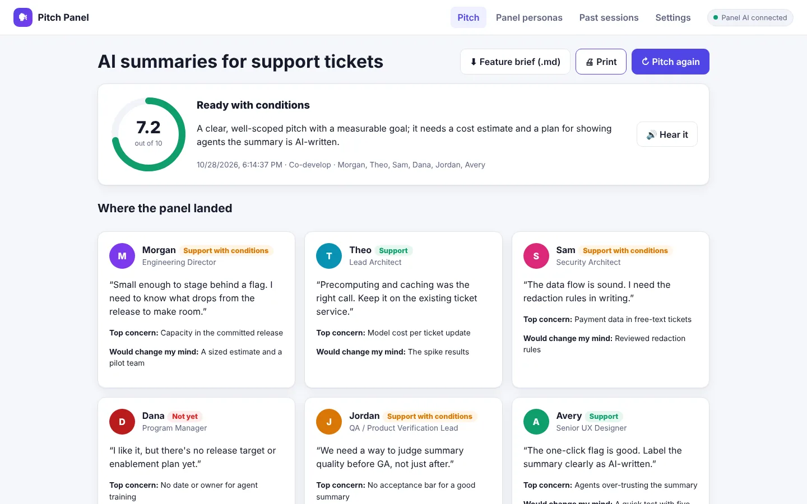
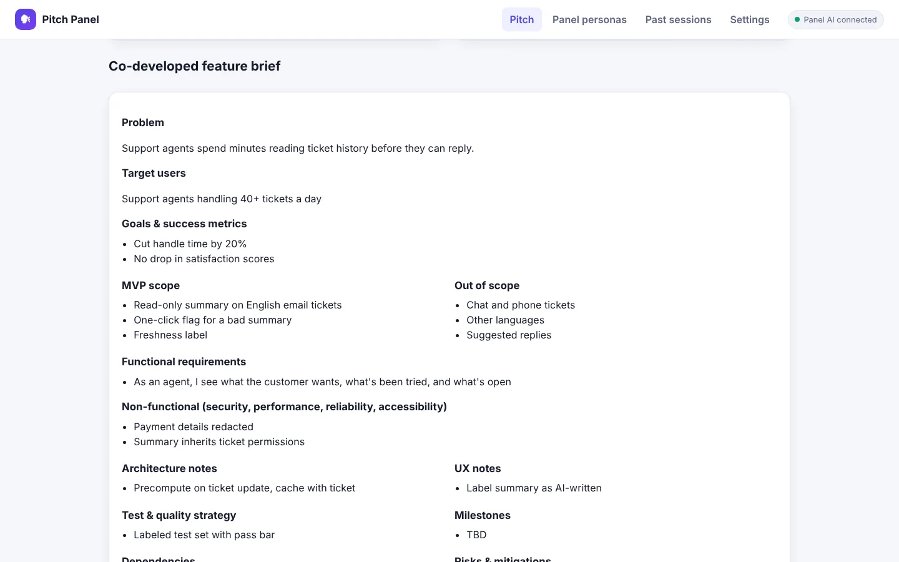
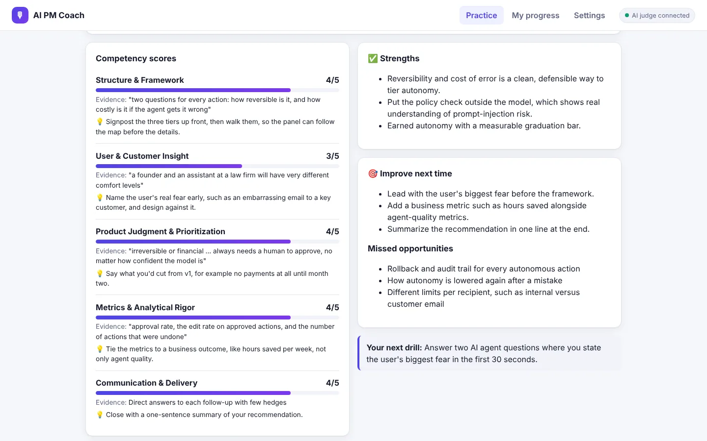

AI PM Coach
Feedback on your product thinking in minutes. Two tools in one: practise product thinking out loud with AI personas and an AI judge, or rehearse a feature pitch with a simulated review panel that helps you shape it into a feature brief.
Both work best in Chrome or Edge, where you can speak your answers. Without an AI key you still get transcription and delivery feedback. Add a key in Settings, Groq's free tier works, to unlock the AI personas and scoring.



The problem
A PM's core skill is judgment: which problem to solve, what to cut, and how you'll know it worked. But the feedback loop on judgment is painfully slow. Engineers find out in minutes, from tests and code review, whether their work holds up. PMs make a call, wait a quarter for it to ship, and then see results tangled up with a dozen other factors.
For AI products, the playbook is still being written. Questions like how to evaluate a model, what guardrails an agent needs, or when it should act without asking don't have years of experience behind them yet. Most PMs get only a handful of real chances a year to work through them. That isn't enough practice to build sound judgment on something this new.
Judgment improves like any other skill: practice, honest feedback, and another try.
Who it's for
Product managers who want to sharpen their product thinking, especially on AI products, where questions about evals, agents, guardrails, and cost now sit alongside classic product design, strategy, metrics, and leadership. It's also useful practice before any high-stakes conversation where you'll be asked to think on your feet, interviews included.
Two tools
Product thinking practice
Answer a product question out loud. AI personas probe the weakest part of your answer, and an AI judge scores five PM competencies with evidence and a tip for each.
Try itPitch Panel
Pitch a feature to AI personas of your engineering, architecture, security, program, QA, and UX partners. They build it out with you, or review it the way a real panel would.
Try itHow product thinking practice works
- Pick the topic. Product Design, AI Product, Strategy, Analytics and Metrics, or Behavioral. Choose a question or let it surprise you, and choose a realistic session or practice with hints.
- Pick a persona, or a panel. Six personas, from a friendly senior PM to an exacting product leader, a staff engineer, and a principal designer, each with their own voice and focus.
- Answer out loud. The persona reads the question aloud. Your answer is transcribed live, with meters for time, pace, and filler words as you speak.
- Get probed. Up to three follow-ups, each aimed at the weakest part of what you just said. Ask a clarifying question and the persona answers with concrete assumptions.
- Get judged. An overall score out of 10, a verdict against the bar, five competency scores with quoted evidence and a tip each, an outline of an exceptional answer, a stronger opening, and one drill for next time.
- Ask the judge. "Why did I only get a 3 on user insight?" Ask by voice or by typing, and the judge answers from your transcript.
- Watch yourself improve. A score trend, a competency profile, and a one-tap drill for your weakest competency.
How Pitch Panel works
- Frame the feature. A working title, its stage, the problem, the target user, and any context you'd give the room.
- Pick the room. Co-develop, where the panel builds the feature with you, or Pitch review, a tougher readiness review. Choose your panelists from eight personas; the first one chairs.
- Pitch out loud. The panel introduces itself and the chair hands you the floor.
- Work through one topic at a time. A panelist raises an issue from their lens, follow-ups stay on it, and it closes with what was agreed and who owns the next step. Address anyone by name and they answer you.
- Watch the feature canvas fill in. A note-taker captures requirements, ideas, decisions, risks, and open questions with owners as you talk.
- Get stances and a brief. A readiness score, each panelist's stance with their top concern and what would change their mind, scores on six competencies, and a co-developed feature brief you can download.
- Ask the panel. "Morgan, what would get you to a yes?" Follow up after the session, by voice or by typing.



Design choices
- A judge that doesn't flatter. Every score uses fixed anchors, where 3 means "meets the bar" and 5 is rare, and every score has to quote the transcript. A coach that inflates scores is worse than none.
- Delivery is measured, not guessed. Pace, filler words, hedges, signposting, and long pauses are counted in the browser from your transcript and timing. The judge receives the numbers rather than estimating them.
- Personas with a point of view. The engineer asks about latency, data, and build cost. The designer asks about flows, edge cases, and accessibility. On a panel, the AI picks who speaks next and spreads the questions around, like a real review.
- A panel that builds, not just grills. In Co-develop mode, about half the panel's turns offer options, scope cuts, designs, or test ideas. Pitch review is the tougher version and ends in a go or not-yet stance from each panelist.
- Meetings that feel like meetings. Pitch Panel works through one topic at a time, and each topic closes with what was agreed and who owns the next step. Say "let's move on" and the panel wraps up the topic.
- Bring your own panel. Edit any persona's role, priorities, usual pushbacks, and signature questions, import a persona pack, or draft a new persona from your own notes.
- Honest about what it is. The panelists are labeled as simulations: useful for rehearsal, not a prediction of anyone's real view. They're instructed never to invent confidential facts, numbers, or commitments.
- Useful with no AI at all. Without a key, product thinking practice still gives you transcription, playback of your recording, delivery analysis, scripted follow-ups, and reference outlines, and Pitch Panel's personas still ask their signature questions.
- Your model, your data. Bring OpenAI, Azure OpenAI, Groq, OpenRouter, Together, Hugging Face, or a local model through Ollama or LM Studio. The key lives only in memory and is never saved, and your progress stays in your browser unless you export it.

My role
I designed and built both tools as a personal project: the topics and question bank, the personas and their review lenses, the scoring rubrics and their calibration rules, the meeting flow and feature canvas, the delivery metrics, and the prototypes themselves. I built them with Claude as my collaborator.
The same personas and rubrics also run as Claude skills, for practice sessions in chat and for judging a pasted transcript of a spoken answer.